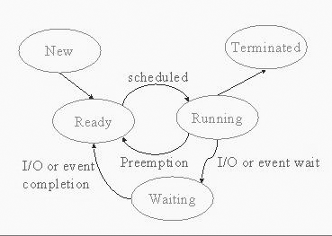

Process Management
Lecture-6
Operating Systems (CS330)
Lecturer: Deepak Gupta
Notes prepared by: Ankit Soni
Lecture Date: August 7, 2004
Contents
About this Lecture
In this lecture, we shall examine the notion of a process in more detail.
We shall talk about the Process Control Block, the data structure used by
the kernel to store information about a process, and process states.
We shall also talk about scheduling and introducte the notion of context
switch.
Need for the Process Concept
Early computer systems allowed only one program to be executed at a time. This program had complete control of the system and its resources. Modern day computers allow multiple programs to be executed concurrently. In a Multi-programmed OS several program may be executing at the same time and even several instances of the same program may also be "running" at the same time. This requires firmer control and more compartmentalization of various programs, and resulted in the notion of
processes.
Back to Contents
Process
A process (sometimes called a task or a job) is an instance of the execution of a program or a "program in execution".
-
System processes are created by the OS to perform tasks on the user’s or system’s behalf.
-
User processes are created more directly by user actions. They include application programs and system
utilities.
A process is much more than a program and hence there is need to clearly understand the difference between a process and a program.
Back to Contents
Difference between a Process and a Program
A program is a "passive" entity it is just some piece of code which might be stored in a file or even written on a piece of paper whereas a process is much more than the
program's code. A process is an "active" entity and may be thought of as a "virtual computer" or a abstraction of a computer.
Although two processes may be executing the same program, they are nevertheless
considered two separate execution sequences. For example several users may be running different copies of the mail program, or the same user may invoke
many copies of the editor program. Each of these is a separate process and though the code in the address spaces of these processes is the same, the data vary.
Back to Contents
What makes up a Process.
The major components associated with a process are: its virtual address space,
and the values of various CPU registers. Of course, these values change as
the process runs. In addition to these, the operating system also internally
maintains state information about the process, for example, information about
files opened by the process.
The main data structure OS maintains about each process and its state is called the Process Control Block (PCB), or the task controlled block.
Back to Contents
Process Control Block
Every process has its own PCB in the kernel. The PCB conceptually stores
all information about the process that is ever needed by the kernel. In
practice, of course, all of this information is not typically stored in
a single structure, but in multiple structures that are all reachable
(through pointers) from the PCB. The information stored in the PCB includes:
-
Process id (pid)
-
User id of owner
-
Address translation tables for the process.
-
Process state: new, ready, running, waiting, terminated (see below).
-
Saved values of CPU registers. For processes that are not currently running,
the kernel needs to store the values of CPU registers so that these can be
later restored when the process is rescheduled on the CPU.
-
CPU scheduling and accounting information: priority, CPU time and other
resource usage etc.
This information is typically used by the scheduling algorithm to decide
which process to run next on the CPU.
-
I/O status information: list of open files etc.
Back to Contents
Process States
At any given point of time, a process is in exactly one of the following states.
-
New - the process is being created (its PCB is not yet fully initialized).
-
Running - the process is currently being executed. At any point of time there can be only one such process in a uniprocessor system. Typically the kernel
maintains a global variable (current in Linux) that points to the
(PCB of the) currently running process.
-
Ready - the process is ready to run but not currently running, there can be many such processes at a given time.
(Pointers to PCBs of) All such processes are maintained in a list called the
Ready Queue. Since only ready to run processes are eligible to run on
the CPU at any given time, the scheduling algorithm of the OS considers only
processes in this list for scheduling next.
-
Blocked/Waiting/Sleeping - waiting for some "event" to occur (for an I/O operation to complete, or a resource to become available, etc.)
-
Terminated - the process has been terminated, in UNIX also called as Zombie State. In this state, only minimal information about the process (such as exit
status and resource usage) is maintained about the process. This information
is also removed (and all traces of the process vanish) when some other process
collects this information.
Back to Contents
Transitions among States.

Process State Diagram
-
new --> ready :- Process admitted to ready queue after its initialization
is complete; it can now be considered for scheduling on the CPU.
-
ready --> running :- CPU scheduler chooses this process to execute next, according to its scheduling policy.
- running --> ready (Preemption) :- Process has used up its current time slice. Here the kernel is forcing the process to give up the CPU, the process is not waiting for any event occurrence.
-
running --> blocked :- Process is waiting for some "event" to occur (for I/O operation to complete, etc.)
-
blocked --> ready :- Whatever "event" the process was waiting on has occurred.
Note there is no direct transition from blocked to
the running state. When the event that a process was waiting for
occurs, the process is simply marked ready to run. It would be picked up
the scheduler for actually running on the CPU sometime later. Also, the
process cannot usually go directly from the blocked state to the
terminated state.
Back to Contents
Scheduling
As we have seen, the CPU is "time shared" among multiple processes.
Scheduling is the process of deciding which process should run next
on the CPU, and then making a context switch to this process.
Scheduling may occur when
-
When a process terminates.
-
Starts waiting for a "event" completion such as disk I/O.
-
Even otherwise, the OS when it gains control (via an interrupt typically timer interrupts), may decide to force the currently running process to give up the CPU. This is called preemption.
In case of process termination and process waiting, we must
schedule some other process or else we are wasting CPU cycles
but in the third case scheduling may or may not happen depending on the
OS policies.
If preemption can occur, the scheduling policy is called preemptive else
it is called non-preemptive.
Back to Contents
Related Links On Similar Topics